Desenvolvimento de Software
Aplicações responsivas e performáticas com as tecnologias do mercado.
Olá, eu sou
Desenvolvedora de Software
Desenvolvo sistemas, integrações e soluções sob medida, com vivência prática em negócios de varejo (e-commerce), logística & mobilidade, agronegócio e saúde pública — unindo código bem estruturado a entendimento real de processo e de regra de negócio.
Sou Ivone Antunes, desenvolvedora de software em Piracicaba-SP, com 3+ anos de experiência profissional
unindo código, processo e regra de negócio em quatro setores: varejo (e-commerce),
logística & mobilidade, agronegócio e saúde pública.
Graduação em Engenharia da Computação (IFSP) complementada por um programa de residência
tecnológica em desenvolvimento e Gestão de Projetos & Empreendedorismo — base que une
lógica de programação a visão de processo e de produto.
Em varejo (e-commerce), apliquei esse raciocínio a lojas virtuais e catálogos —
prova social, redução de fricção no checkout e gestão de estoque. Em logística e mobilidade,
acompanhei a digitalização do transporte de combustíveis — rastreabilidade, SSMA, faturamento e agendamento
de terminais. No agronegócio, dei suporte a sistemas de agricultura de precisão e
logística de safra, integrados a ERP. Em saúde pública, operei sistemas de governo e do
SUS, lidando com dados sensíveis e com os desafios reais de usabilidade e confiabilidade que plataformas
públicas enfrentam no dia a dia.
Mais recentemente, atuei como Assistente Eleitoral, responsável por QA (testes) de hardware e
software de urnas eletrônicas, elaboração de relatórios técnicos e supervisão de pessoas e processos
durante o período eleitoral.
Hoje uno essas vivências ao desenvolvimento de software — consumo de APIs RESTful, integração de
Inteligência Artificial e boas práticas de segurança — com experiência prática em sistemas corporativos
como ServiceNow, SAP/ERP e DATASUS, além de metodologias ágeis (Scrum/Squad). Estou disponível para
oportunidades como desenvolvedora de software, com interesse em produtos que cruzam tecnologia com varejo,
logística, agronegócio ou saúde.
Essa vivência profissional ganha continuidade no meu portfólio,
que aplica o mesmo raciocínio de negócio a novos catálogos e sistemas de gestão e logística — iniciativas
que unem estudo, código e regra de negócio.
Estudo continuamente, participo de comunidades tech, fui mentora voluntária e treinei para
maratonas de programação — experiências que fortaleceram meu raciocínio lógico sob pressão, trabalho em
equipe e comunicação.
Soluções sob medida, da ideia ao deploy.
Aplicações responsivas e performáticas com as tecnologias do mercado.
APIs robustas e escaláveis, com foco em performance, segurança e boas práticas.
Conectando ferramentas e automatizando processos para otimizar o dia a dia do seu negócio.
Criação e customização de sites, blogs e lojas virtuais, além de experiência com ServiceNow na gestão de serviços de TI (ITSM), governança e controle de processos e fluxos corporativos.
Experiência prática com testes de hardware e software em ambiente de alta criticidade (urnas eletrônicas do TRE-SP), aplicando protocolos de qualidade, checklists e rastreabilidade também a projetos de desenvolvimento de software.
Tradução de regras de negócio de setores com alta criticidade operacional e de dados — logística & mobilidade, agronegócio e saúde pública — em requisitos técnicos, testes e entregas de software.
Interfaces intuitivas, acessíveis e alinhadas com a identidade da marca.
Atuação em squads multidisciplinares e nas cerimônias do Scrum (sprints, dailys, plannings e retrospectivas), com foco em entregas incrementais e colaboração entre áreas técnicas e de negócio.
Interpretação de regras de negócio junto a times, clientes e stakeholders, com documentação de requisitos, estimativa de esforço, escrita de casos de teste e alinhamento de entregas — aplicados à implementação frontend, automação e desenvolvimento de software.
Iniciativas pessoais que unem estudo, código e regras de negócio — construídas para aplicar o que aprendo a problemas reais de e-commerce/varejo, logística, gestão empresarial e saúde pública.
Proposta de jogo de tiragens de Tarô (78 arcanos, 3 modos de leitura, dignidades elementais entre cartas) e, no mesmo repositório, a Loja Mística Venus — extensão natural de monetização do mesmo público esotérico, não um catálogo genérico anexado. A loja reproduz mecanismos reais de varejo (ancoragem de preço, prova social, gatilho de escassez, checkout sem fricção) para converter interesse em venda.
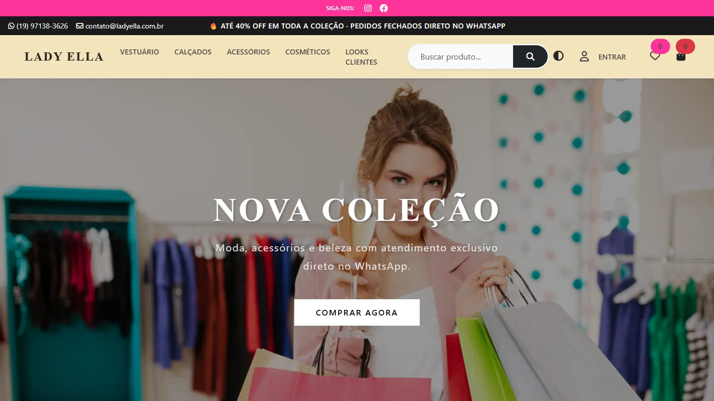
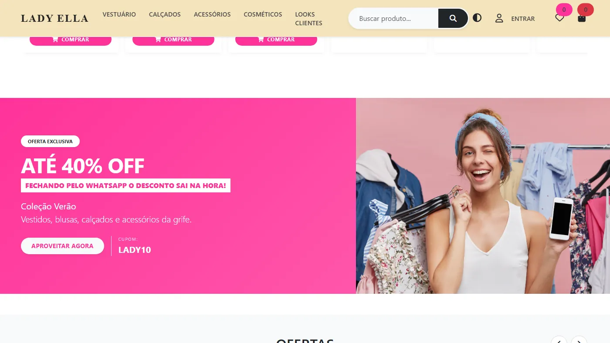
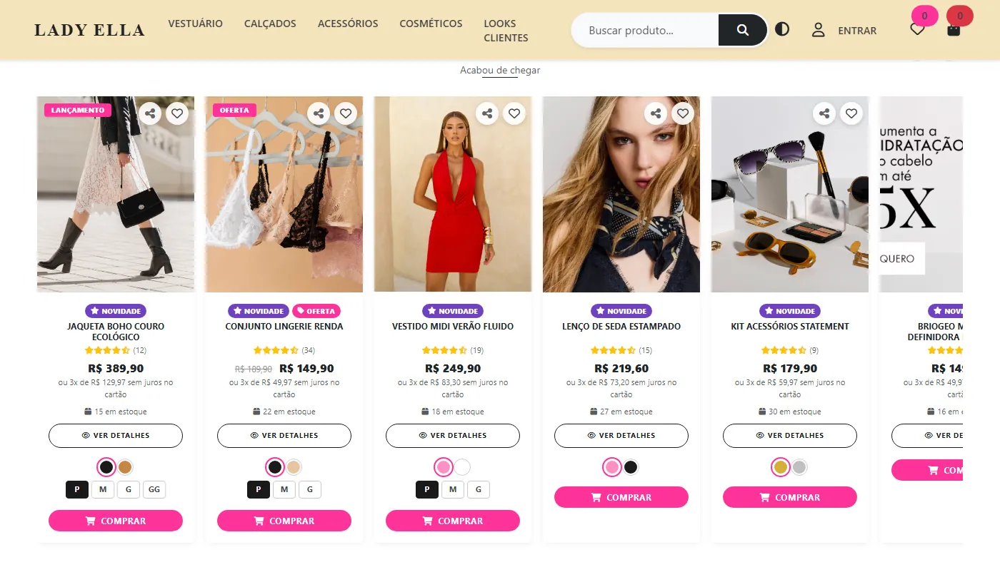
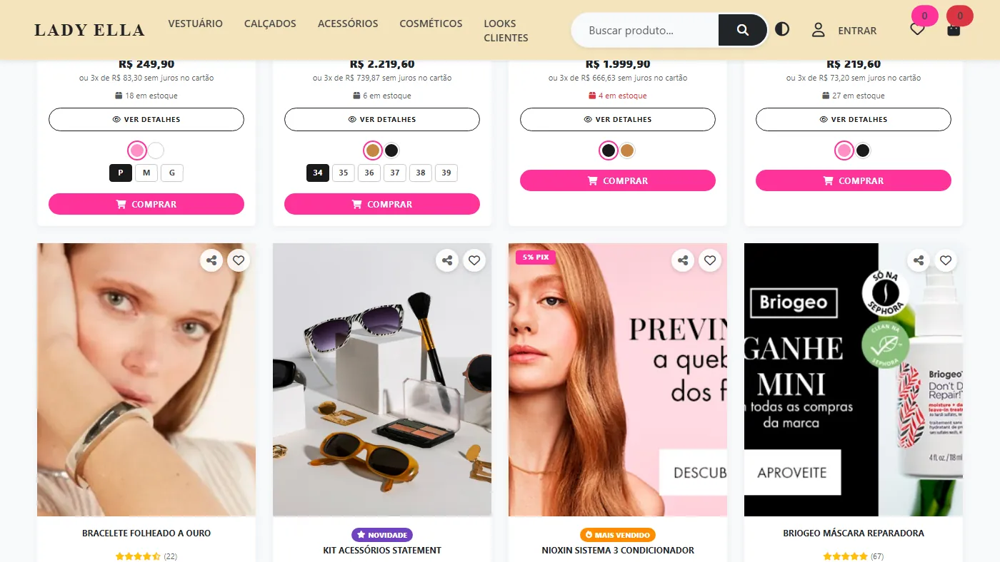
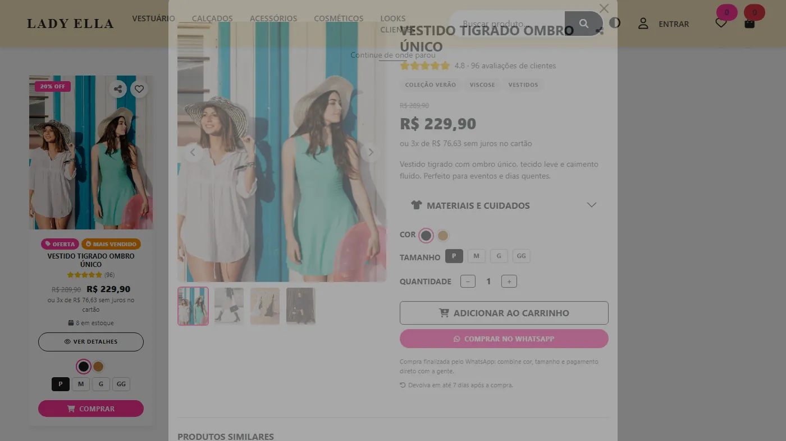
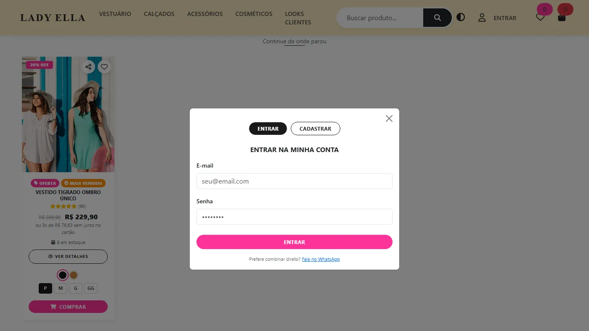
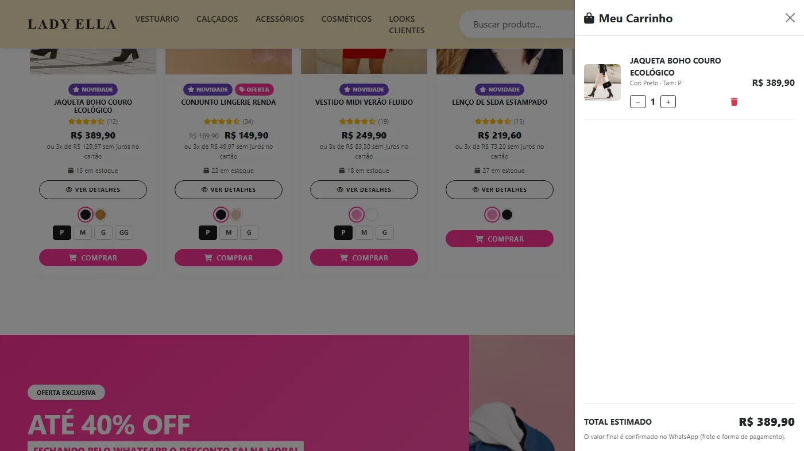
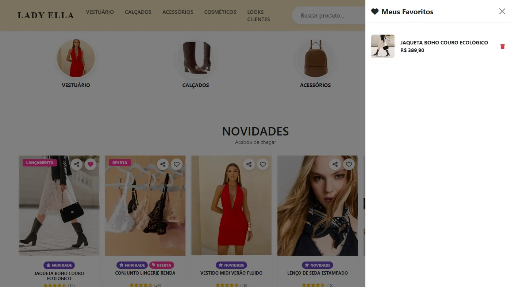
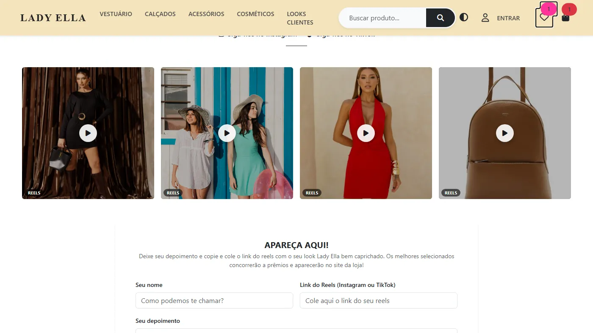
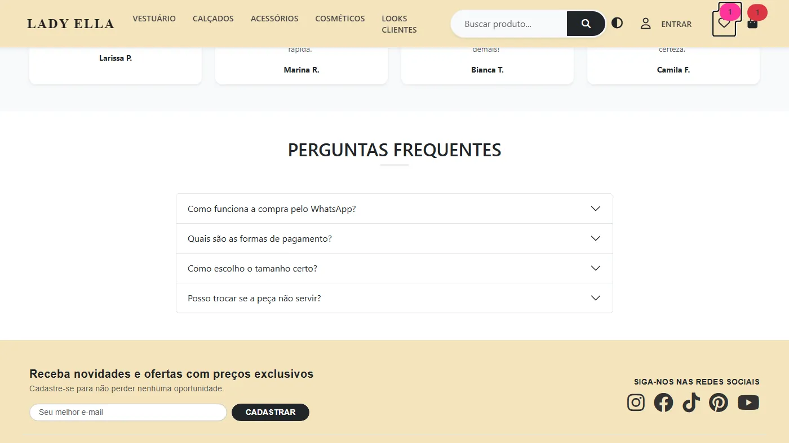
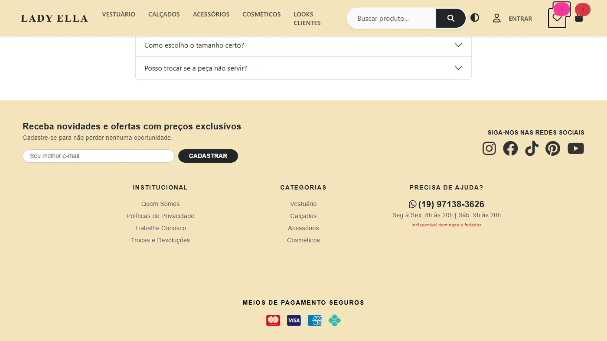
Vitrine digital de moda, calçados, acessórios e cosméticos para uma loja que vende por WhatsApp — sem o custo e a complexidade de um e-commerce completo. A interface foi elaborada para direcionar o cliente à compra sem deixá-lo perdido: banner de promoção com indicação de cupom logo na home, e, na página do produto, avaliação por estrelas de outros clientes, múltiplas fotos do item, seletor de cor e tamanho e indicação de peças similares reduzem a incerteza de comprar à distância. Filtros por categoria, material e cuidados ajudam a encontrar a peça certa sem precisar perguntar, e looks reais de clientes reforçam essa confiança como vitrine viva da marca. "Comprar" já monta a mensagem de WhatsApp pronta — zero custo de hospedagem, e a própria loja edita o catálogo sem programar.
A home já direciona para a venda: botão "Ver Catálogo", prova social com avaliação por estrelas e "+500 clientes curtiram e deixaram depoimento", localização da adega em Piracicaba-SP, compartilhamento da página e compra direto pelo WhatsApp — o cliente não fica perdido navegando, é guiado à decisão já na primeira tela. A mesma lógica de confiança se repete no catálogo (depoimentos, selo "Cliente Verificado", estoque e parcelamento) e no link direto para o mapa com a rota até a loja.
Num negócio sem loja física na tela, a confiança não vem só da marca — vem de ver outras pessoas satisfeitas: "+500 Clientes Satisfeitos" já na home, depoimentos reais em carrossel (nome, avatar, estrelas) com curtidas, e indicador de estoque por variante substituem o balcão físico. Visitantes viram canal de divulgação ao compartilhar produtos, e cada depoimento gera conteúdo novo sem custo de produção. Diferencial: a agente de vendas por IA ("Amanda") sonda a preferência da cliente e sugere cross-sell antes de fechar o pedido — atendimento consultivo automatizado, não só um catálogo. Arquitetura 100% estática por escolha, não limitação: sem framework nem backend, localStorage como "banco de dados" (zero custo de servidor) e checkout finalizado no WhatsApp, canal onde o negócio já atende.
Wireframe navegável de e-commerce de hortifruti — catálogo com 12 produtos, busca, ordenação e paginação, controle visual de estoque por safra (em estoque, esgotado, reabastecendo) e carrinho. Rodapé institucional fixo (CNPJ, políticas, contato) resolvido com três spacers calculados por breakpoint do Bootstrap, evitando que o conteúdo fique escondido atrás dele sem depender de JavaScript pra medir altura em runtime. Protótipo front-end puro, pensado para validar a experiência de compra com stakeholders antes de investir em back-end.
Previsão do tempo traduzida em sugestão de roupa por IA ("o que eu visto hoje?") e um guia com indicação de destinos de viagem (Itália, Espanha, Turquia, Brasil) — peça, cupom, link de compra e pontos turísticos próximos por geolocalização ("o que eu levo na mala?" e "o que visitar?"). Favoritos e compartilhamento geram motivo de retorno antes da viagem, e um painel admin cadastra destino, look e cupom sem tocar em código — base pronta para monetizar por afiliação e assinatura.
Esteira ITSM completa — da abertura da demanda ao encerramento do projeto — com motor de regras orientado a dados: o fluxo de etapas (Backlog → Prospecção → Concepção → Em aprovação → Aprovado → Execução) e as tarefas de cada fase vêm de uma tabela, não de condicionais no código, então mudar o comportamento de um tipo de demanda é editar dado, não reescrever lógica. Indicadores inspirados em GRC/ITBM cobram que todo projeto registre o impacto real medido após a entrega, não só o planejado — a evidência que justifica investimento em TI para a diretoria. Agendamento automático de janelas de manutenção por sistema (CMDB): a janela abre sozinha quando a hora chega e, se não for concluída dentro do SLA prometido, o próprio servidor marca SLA vencido — sem ninguém precisar notar e sinalizar o atraso manualmente. Aprovadores por alçada financeira, CMDB com responsável técnico e de negócio por sistema, e projetos/sprints com burndown e KPIs completam a governança.
Portfólio comercial para criadora de conteúdo UGC, com backend Node.js + Express + SQLite (via sql.js, WebAssembly puro — sem dependência de compilação nativa, então npm install funciona em qualquer máquina sem Visual Studio Build Tools). Grade de conteúdos filtrável por categoria, vitrine de destaques, painel de métricas de audiência com contagem animada, carrossel de depoimentos reais e formulário de proposta que grava o lead no banco com status (novo, em contato, fechado). Painel administrativo com autenticação por chave e CRUD completo de projetos, depoimentos e propostas — toda alteração feita ali reflete direto no site público, sem editar código.
Plataforma de gestão de frota, viagens e SSMA (segurança, saúde e meio ambiente) inspirada no MyDenox — sistema de gestão e monitoramento inteligente da Denox, plataforma integrada de automação, controle de acesso, segurança e monitoramento. Regras de negócio validadas no servidor, não só na tela: viagem só é criada com veículo e motorista, exclusão de cadastro em uso é bloqueada (transportadora com veículos, veículo com viagens/violações), e a tratativa de violações de condução roda como máquina de estados (Pendente → Em Revisão → Aprovado/Recusado). Dados fictícios — projeto de portfólio, sem informações reais de clientes ou operações, em conformidade com regras de segurança de dados.
Backend Node.js + Express que modela o abastecimento de frota rural (tratores, colheitadeiras, pulverizadores, caminhões) como um processo controlado em 4 passos, cada um validado no servidor: identificação do operador, vinculação ao veículo, registro do abastecimento e liberação controlada — que confere o estoque da bomba e debita os litros automaticamente, recusando a liberação se não houver combustível suficiente. Também é possível agendar o abastecimento de um veículo para um horário futuro: quando a hora chega, o próprio servidor cria a solicitação sozinho, sem precisar de ninguém clicando num botão naquele instante. Dashboard com litros abastecidos, pendências de liberação e ranking de consumo por veículo dá a rastreabilidade que normalmente se perde em planilha ou controle verbal no pátio.
Sistema de autoatendimento e controle de pesagem para uma balança rural: o motorista faz check-in num totem e o ciclo de pesagem roda como máquina de estados validada no servidor — pesagem bruta → registro de descarga → pesagem tara, com o peso líquido calculado no fim, e ~25% dos check-ins sorteados no servidor (nunca no cliente) para coleta de amostra. Agendamento automático de horário de chegada: a transportadora pede um horário e o sistema encaixa sozinho no primeiro slot livre do expediente (janelas de 20 min, até 2 veículos por slot), e o check-in do dia confirma automaticamente o agendamento correspondente — sem fila de veículo sem hora marcada.
Protótipo nascido de um workshop sobre usar IA para gerar prompts de Figma: a parte que mais valeu não foi a ferramenta, foi o briefing por trás — concorrentes, personas com dores reais, funcionalidades que respondem a cada dor. Apliquei essa lógica a um problema real de quem migra de carreira: catálogo gigante de cursos, decisão travada. Em vez de formulário, a pessoa só reage a cards — curtir ou pular — e o servidor recalcula a afinidade de cada curso em tempo real a partir do histórico de curtidas por trilha (um bônus por curtida na mesma trilha, não um número decorativo). No fim, o match é escolhido e justificado com base na trilha que a pessoa mais reforçou.
Projeto construído com base nas regras de negócio reais da saúde pública municipal — a Rede Cegonha, o fluxo de descarte seguro de medicamento e a classificação por tipo de unidade (UBS, UPA, CAPS, farmácias, hospitais) serviram de inspiração direta. Portal de saúde pública com mapa de 131 unidades reais de Piracicaba-SP georreferenciadas e agrupadas por tipo, Portal do Paciente e Portal Profissional com login separado por perfil, e painel de acessibilidade (alto contraste, escala de fonte, espaçamento de letras) persistente entre as páginas.
Minha jornada educacional e profissional na área de tecnologia
Instituto Hardware BR
Lógica de Programação com JavaScript, JavaScript e Orientação a Objetos, HTML + CSS/SASS, Web Services (Client) e noções de UI/UX.
Instituto Hardware BR
1. Gestão de Projetos de Tecnologia
Ciclo de Vida: Planejamento, execução, custos e prazos de sistemas.
Metodologias: Abordagens tradicionais e frameworks ágeis.
Viabilidade: Análise técnica, econômica e controle de qualidade.
2. Empreendedorismo e Inovação
Modelos de Negócio: Criação de startups com Business Model Canvas.
Propriedade Intelectual: Patentes e proteção de software.
Mercado: Marketing, finanças básicas e precificação.
3. Eficiência Organizacional
Cultura Lean: Eliminação de desperdícios em processos e projetos.
Melhoria Contínua: Ferramentas gerenciais para solução de problemas.
Instituto Federal de Educação, Ciência e Tecnologia - Campus Piracicaba-SP
Foco do Curso
Formação Integral: Une teoria, prática e responsabilidade socioambiental.
Multidisciplinaridade: Integra Ciência da Computação, Eletrônica e Matemática.
Área de Atuação: Foco em sistemas embarcados e automação industrial ou comercial.
Pilares Práticos
Carga Horária: Exige 3.510 horas no total para a graduação.
Projeto Final: Aplicação prática dos conhecimentos em um projeto real.
Incentivo Científico: Bolsas de ensino, monitoria e treinos para maratonas de programação.
Tribunal Regional Eleitoral de São Paulo — Cartório Eleitoral de Piracicaba-SP
Atuei como Assistente Eleitoral junto ao Cartório Eleitoral de Piracicaba-SP (TRE-SP), dando suporte técnico e operacional ao processo eleitoral, com foco em garantia de qualidade (QA) de hardware e software das urnas eletrônicas e na gestão de equipes e processos em um ambiente de alta criticidade, prazo rígido e zero margem para erro.
Vivência que reforçou disciplina com protocolos de teste, rastreabilidade e documentação técnica sob prazo crítico — competências diretamente aplicáveis a QA e a processos de desenvolvimento de software.
Diretoria Regional de Saúde
Atuei na Diretoria Regional de Saúde (DRS), órgão estadual responsável pela articulação entre o Ministério da Saúde e os municípios na coordenação da saúde pública regional. Prestei suporte técnico a colaboradores e operei sistemas segmentados de saúde coletiva, lidando diretamente com desafios de usabilidade, integração e confiabilidade de dados enfrentados pelos usuários finais.
Vivência que aproximou minha migração para desenvolvimento de software: lidar com desafios de usabilidade, integração e confiabilidade de dados enfrentados pelos usuários finais reforçou a leitura de indicadores e o uso de dados para embasar decisões — competências aplicáveis à construção de dashboards e ferramentas orientadas a dados.
Raízen
Atuei na divisão EAB (Etanol, Açúcar e Bioenergia) da Raízen, atendendo às áreas de Agrícola, Indústria e SSMA, no time de TI fazendo interface com times de negócio e fornecedores.
Vivência no agronegócio (EAB) que inspirou projetos próprios como AgroTanque e PesaCampo — logística, ERP, SSMA, faturamento, suprimento mobile, geolocalização e drones — consolidando a transição para desenvolvimento de software, com familiaridade prática no ciclo requisição-lógica-resposta que fundamenta o consumo e desenvolvimento de APIs.
Raízen/Shell
Atuei em projetos de transformação digital na logística primária de transporte de combustíveis, integrando sistemas de SSMA, mobilidade, rastreabilidade, estoque e Supply Chain Management (Raízen/Shell), com foco em segurança no transporte de produtos inflamáveis, precificação de frete e controle de distribuição e faturamento.
Vivência que aproximou regras de negócio de logística, automação e integração de sistemas corporativos do desenvolvimento de software: reforçou a capacidade analítica na leitura de indicadores e o uso de dados para embasar decisões — competências aplicáveis à construção de dashboards e ferramentas orientadas a dados.
Ka Solution (Microsoft Partner Gold Learning)
Fundamentos de segurança, compliance e gestão de identidade no ecossistema Microsoft — base para boas práticas de segurança e governança de dados aplicadas ao desenvolvimento de software.
Ver certificado →EBAC — Escola Britânica de Artes Criativas & Tecnologia
Workshop de prototipagem no Figma com apoio de IA, ministrado por Giovanni Sonnberger — prática direta de UI/UX aplicada à construção de interfaces.
Ver certificado →Daxus
Imersão prática em Claude (Anthropic) aplicado a fluxos reais de desenvolvimento — base para os protótipos e automações de IA deste portfólio, como o Rumo.
Ver certificado →BeeCrowd
Resolução de problemas, estruturas de dados e algoritmos — prática que apoiou a participação na Maratona de Programação IFSP (InterIF).
Duolingo
Prática contínua de inglês para leitura técnica, documentação e comunicação internacional.
Um espaço para registrar o que eu leio, assisto e penso — e como isso atravessa a forma como eu trabalho e programo.
Um pouco mais sobre quem sou além do código
Tenho como ocupação leituras de livros para expandir meu repertório, além de cursos profissionalizantes, inglês. Jogos de memória e lógica, além de jogos de personalidade e autoconhecimento, como oráculos. Também gosto muito de cinema e séries — janelas para outras culturas, épocas e pontos de vista que ampliam minha visão de mundo e estimulam a criatividade.
Transformo curiosidade por engenharia e tecnologia em protótipos e projetos reais nas horas vagas — vivência que fortalece foco, resolução de problemas e liderança, unindo a base analítica da engenharia a uma visão estratégica de negócios.
Tenho interesse na interseção entre arte, arquitetura, design, moda e tecnologia. Para mim, todas essas áreas dialogam através da forma, da proporção e da experiência humana determinando visão criativa, flexível e perspectivas diferentes — seja na construção de um edifício, de um objeto ou de uma roupa.
Aromaterapia (saboaria e velas aromáticas e bem-estar) — nicho onde já empreendi.
Não começo o dia sem uma xícara — meu combustível para programar.
Participo do Dev Pira e sigo criadores como Karol Attekita, Giulia Bordignon e Rodolfo Mori para trocar experiências e acompanhar tendências tech.
Testei urnas eletrônicas em uma eleição e vi de perto o rigor técnico e os protocolos de QA por trás da democracia brasileira.
Tenho pet que é minha companhia durante as sessões de código em casa e nas rotinas de exercícios ao lar livre. Taz é um pet Atleta focado e disciplinado, que gosta de criar conteúdos para seu perfil no Instagram. Segue @pet.tazmania
Pedalo e pulo corda nas horas vagas — disciplina física e desconexão da tela, junto com o Taz.
Cultivo plantas em casa — um hobby que exige paciência e constância, longe das telas.
Tenho playlists específicas para cada momento de trabalho.
Adoro descobrir restaurantes novos e experimentar pratos e bebidas variadas — de confeitaria a vinhos e destilados.
Acredito no poder do aprendizado contínuo: cada mudança de rota na minha trajetória começou aprendendo
algo novo na prática, antes de qualquer sala de aula. Foi assim que cheguei à Engenharia da Computação —
não por vocação óbvia, mas através do empreendedorismo. Com a Aromaterapia Inaie, meu primeiro negócio,
precisei aprender sozinha a editar fotos de produto, criar conteúdo para redes sociais e montar um blog/loja
na Wix — meu primeiro contato real com e-commerce — além de manter um espaço no WordPress.
Esse contato direto com as duas plataformas, somado ao desafio de separar as finanças pessoais das
do negócio, me deu minha primeira visão prática de gestão de produto: entender catálogo, canal de venda,
conteúdo e controle financeiro como partes de um mesmo sistema, não tarefas soltas. Foi essa mesma
necessidade que, já na faculdade, inspirou o desenvolvimento do Fature, meu primeiro aplicativo, hoje
disponível no GitHub — e o que me convenceu a seguir formalmente para a tecnologia.
Dessa experiência, consegui entrar no mercado de trabalho e destacar essas vivências em estágios que
atravessaram setores bem diferentes entre si — logística e mobilidade, agronegócio, saúde pública e, mais
recentemente, o setor eleitoral —, aplicando na prática o mesmo raciocínio de produto e de negócio que
comecei a desenvolver ainda como empreendedora.
Esse raciocínio continua vivo no meu portfólio: catálogos
e lojas virtuais aplicam prova social, redução de fricção no checkout e gestão de
estoque para resolver problemas reais de varejo; sistemas de gestão recriam em código processos de ITSM,
governança e operação logística; e um produto com IA traduz dados em decisão — do clima à mala de viagem.
Cada um nasceu de uma pergunta de negócio concreta, não de uma tecnologia que eu só queria testar.
Esse mesmo apetite por aprender me levou a treinar e competir na Maratona de Programação IFSP
(InterIF) e a atuar como mentora voluntária no Cursinho Pré-vestibular IF — experiências que reforçaram meu
raciocínio lógico sob pressão, trabalho em equipe e capacidade de explicar o que sei para quem está
aprendendo.
Fora do código, essa mesma curiosidade e disciplina aparecem nos meus hobbies — alguns deles
abaixo.
"Minha trajetória é a prova viva do que é defendido na filosofia 'Lifelong Learners': aprender a aprender é o que me manteve relevante em cada mudança de rota."
— Ivone Antunes
Estou sempre aberto(a) a novos projetos e oportunidades.